- Class of visual perception
- Modern augmentation techniques
- Transfer learning
- Knowledge distillation
- Hard Label vs Soft Label
- GoogLeNet
- Receptive Field(수용필드, 수용장)
- ResNet
- Two-stage detector vs One-stage detector
- Analysis of model behaviors
Class of visual perception
-
Color perception
-
Motion perception
-
3D perception
-
Semantic-level perception
-
Social perception (emotion perception)
-
Visuomotor perception, etc.
Modern augmentation techniques
-
identity
-
auto contrast
-
equalize
-
rotate
-
solarize
-
color
-
posterize
-
contrast
-
brightness
-
sharpness
-
shear-x, y
-
translate-x, y
Transfer learning
- 현실에서는 고품질 혹은 대량의 dataset을 얻기 힘듬
- 이미 잘 만들어진 dataset으로 잘 만든 model(pre-trained model)을 가져와 활용하는 기술
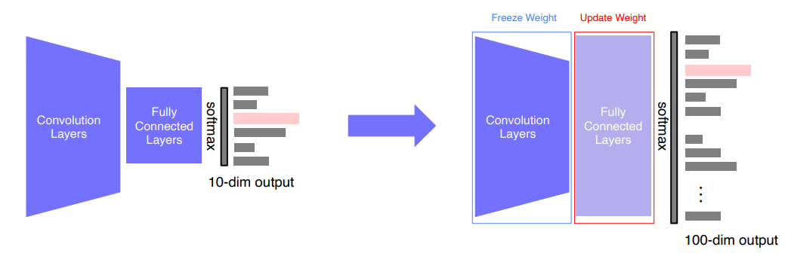
Knowledge distillation
Knowledge distillation - Wikipedia
In machine learning, knowledge distillation is the process of transferring knowledge from a large model to a smaller one.
https://en.wikipedia.org/wiki/Knowledge_distillation
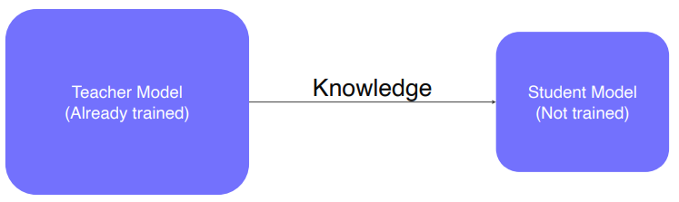
- 기계학습에서 Knowlkege distillation은 큰 모델에서 작은 모델(일반적으로) 지식을 이전하는 프로세스
- 모델압축, unlabeled dataset에 대한 pseudo-label(가짜 라벨) 생성에 사용
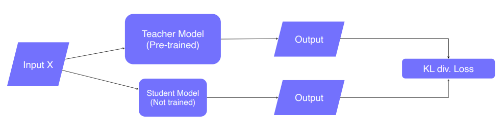
-
Student Model이 Teacher Model의 결과를 흉내내게(mimic) 함
Hard Label vs Soft Label
-
Hard Label : one-hot vector 형태
- ex
-
Soft Label : softmax 형태
-
ex
-
GoogLeNet
-
Stacked inception modules
Inception Module
Log In Sign Up Inception Modules are used in Convolutional Neural Networks to allow for more efficient computation and deeper Networks through a dimensionality reduction with stacked 1×1 convolutions.
https://deepai.org/machine-learning-glossary-and-terms/inception-moduleInception v1 - 2014 | DataCrew
니가 뭘 좋아할지 몰라서 다 준비해봤어.
http://datacrew.tech/inception-v1-2014/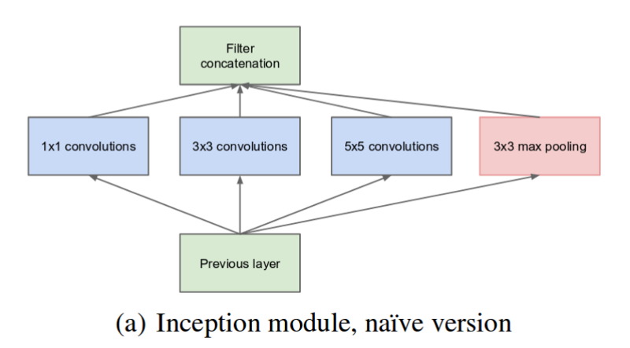
- 다양한 conv 필터와 pooling을 수행
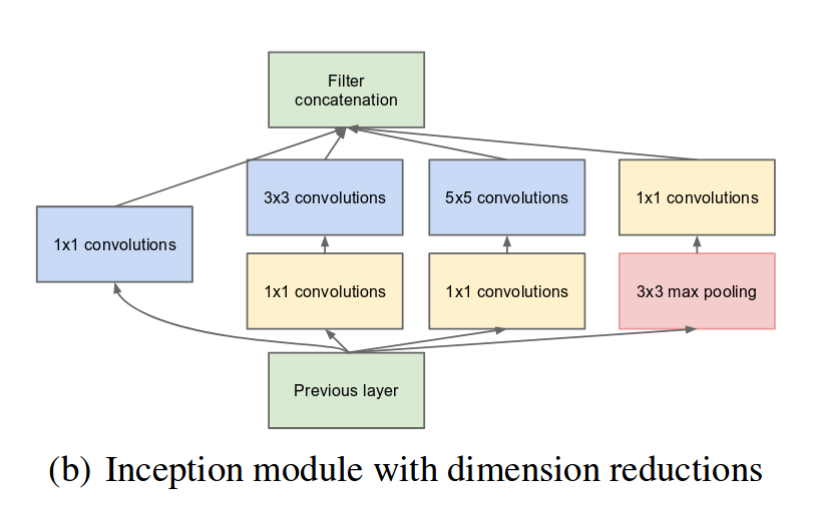
- 하지만 파라미터 수가 너무 많이 필요한 단점이 있음, 이를 1x1 Covolution을 통해 Channel 수를 줄여 해결
-
Auxiliary Classifier
-
Vanishing gradient를 해결하기 위해 도중에 값을 injection
-
낮은 단계에 해당하는 layer에서도 backpropagation되는 gradient signal을 증폭시킴
-
Receptive Field(수용필드, 수용장)
What is a receptive field? | CNNs #2
A guide to receptive field arithmetic for Convolutional Neural Networks
The receptive field is perhaps one of the most important concepts in Convolutional Neural Networks (CNNs) that deserves more attention from the literature.
https://blog.mlreview.com/a-guide-to-receptive-field-arithmetic-for-convolutional-neural-networks-e0f514068807
Info
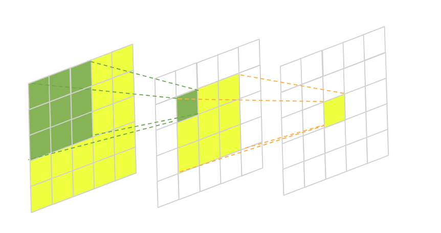
- 특정 CNN Feature에 대해서 입력공간이 영향을 받는 크기
-
ex ) 첫 번째 CNN 계층의 Feature의 입력 공간에 대한 Receptive Field는 3x3이다.
-
ex ) 두 번째 CNN 계층의 Feature의 입력 공간에 대한 Receptive Field는 5x5이다.
-
ResNet
Residual neural network - Wikipedia
A residual neural network ( ResNet) is an artificial neural network (ANN).
https://en.wikipedia.org/wiki/Residual_neural_network
Info
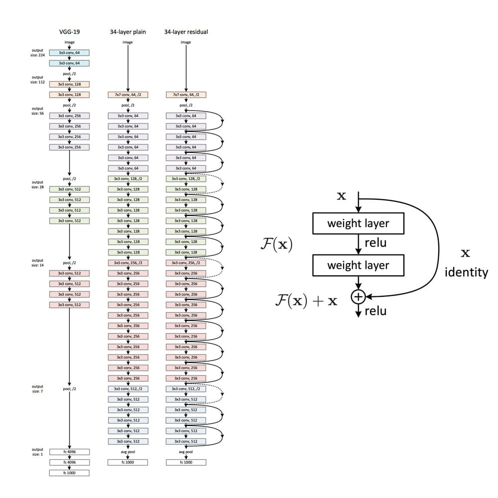
- Shortcut connection을 도입하여 기존보다 더 깊게 층을 쌓을 수 있게 됨
- 직접 구현하기
-
ConvBlock
class ConvBlock(nn.Module): def __init__(self, in_channels, out_channels, kernel_size=3, stride=1, padding=1): super().__init__() #\#fill it## self.conv = nn.Conv2d(in_channels, out_channels, kernel_size=kernel_size, stride=stride, padding=padding) # kernel size = ... self.batchnorm = nn.BatchNorm2d(out_channels) def forward(self, x): #\#fill it## x = self.conv(x) x = self.batchnorm(x) return x -
ResBlock
class ResBlock(nn.Module): def __init__(self, in_channels, out_channels, pool_stride = 1): super().__init__() self.kernel_size = 3 self.padding = 1 self.stride = 1 self.relu = nn.ReLU() self.pool_stride = pool_stride self.in_channels = in_channels self.out_channels = out_channels if(in_channels == out_channels): self.skip = torch.nn.Identity() else: self.skip = torch.nn.Conv2d(in_channels=in_channels, out_channels=out_channels, kernel_size=1, stride=self.pool_stride) self.conv1 = ConvBlock(in_channels=in_channels, out_channels = out_channels, kernel_size=self.kernel_size, stride=self.stride, padding=self.padding) self.conv2 = ConvBlock(in_channels=out_channels, out_channels = out_channels, kernel_size=self.kernel_size, stride=self.pool_stride, padding=self.padding) def forward(self, x): #\#fill## y = self.conv1(x) y = self.relu(y) y = self.conv2(y) return self.relu(y + self.skip(x)) -
Resnet Model
class ResNet(nn.Module): def __init__(self, in_channels, out_channels, nker=64, nblk=[3,4,6,3]): super(ResNet, self).__init__() self.enc = ConvBlock(in_channels, nker, kernel_size=7, stride=2, padding=1) self.max_pool = nn.MaxPool2d(kernel_size=3, stride=2, padding=1) self.average_pool = nn.AvgPool2d(kernel_size=5, stride=1) #\#fill## self.relu = nn.ReLU() layers = [] for j, b in enumerate(nblk): __out_chennel = 64 * (j+1) for i in range(b): if(j != 0 and i == 0): __pool_stride = 2 __in_chennel = 64 * j else: __pool_stride = 1 __in_chennel = __out_chennel print(__in_chennel, __out_chennel, __pool_stride) layers.append(ResBlock(__in_chennel, __out_chennel, __pool_stride)) print('complete auto layer making') self.conv = nn.Sequential(*layers) self.fc = nn.Linear(nker*2*2, 10) def forward(self, x): x = self.enc(x) x = self.max_pool(x) #\#fill## x = self.conv(x) x = self.average_pool(x) x = x.view(x.shape[0], -1) out = self.fc(x) return out
-
Two-stage detector vs One-stage detector
One stage vs two stage object detection
Instead of “region detection + object classification”, its “(1)region proposal + (2)classification and localization in two stage detectors.
https://stackoverflow.com/questions/65942471/one-stage-vs-two-stage-object-detection

- Object detection 시, ROI Search와 ROI 내 Image Classification을 별도로 수행하면 Two-stage detector, 한번에 수행한다면 One-stage detector
- 속도 : Two Stage detector < One-stage detector(better)
- 정확도 : Two Stage detector(better) < One-stage detector
- Traditional Methods
- Raw Image Segmentation → 유사 영역 Merge → 후보 영역(Candidate box) 추출
- Two-stage detector
-
R-CNN
Info
-
Fast RCNN
Info
-
Faster RCNN
Info
-
- One-stage detector
-
YOLO
Info
-
SSD
Info
-
RetinaNet
Info
-
- etc. Detection with Transformer
-
DETR
Info
-
Analysis of model behaviors
-
Embedding feature analysis
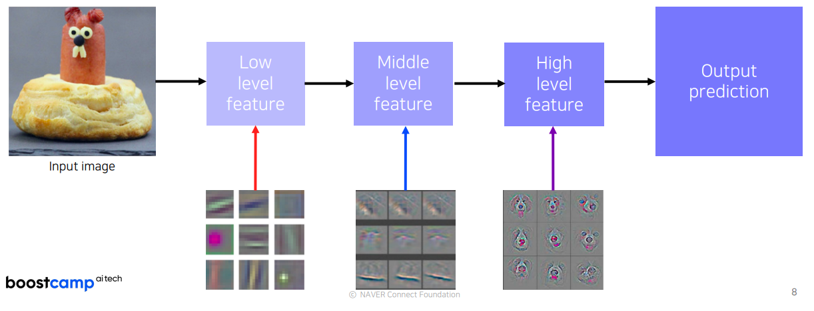
- Dataset들에 대한 Model의 고차원 high level feature vector를 수집(모델의 뒷부분, High level feature)
- 알고싶은 이미지도 마찬가지로 inferrence 시켜서 high level feature vector를 수집
- feature vector들끼리의 유사성으로 해당 이미지와 유사한 high level feature vector를 Dataset 내의 이미지들을 얻을 수 있음
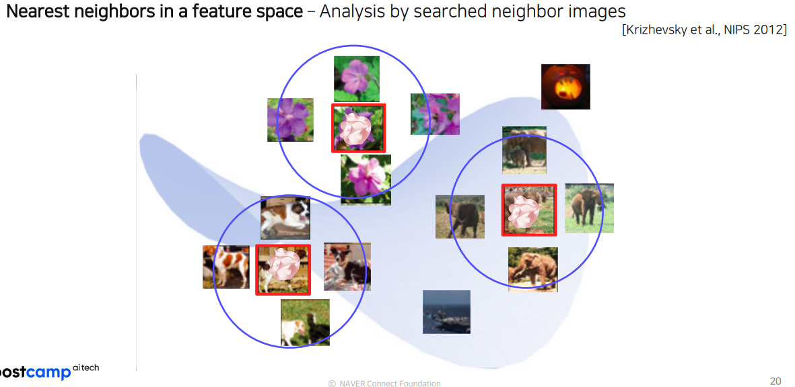
-
t-SNE(t-distributed stochastic neighbor embedding)
- 고차원 백터를 저차원으로 표현할 수 있는 방법
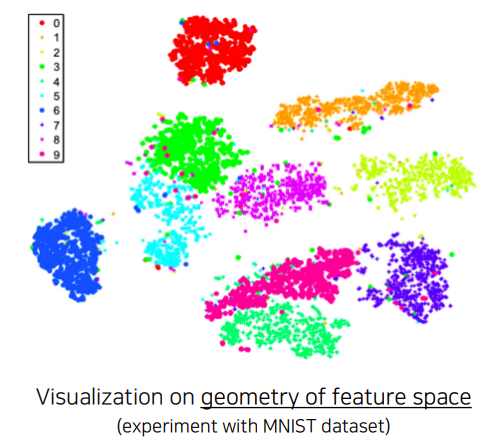
-
CAM(Class activation mapping)
-
Conv블록의 뒤에 3ch conv블록 생성, class에 대한 weighted sum
-
hitmap 느낌으로 모델이 인지한 부분을 볼 수 있음
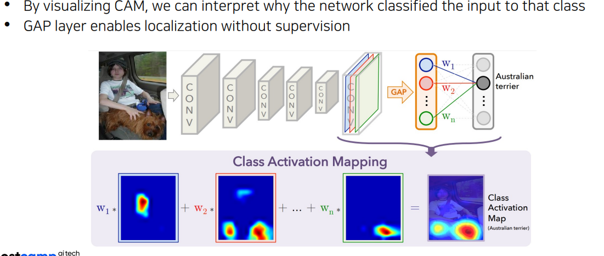
-
모델이 처음부터 저 모양이라면 바로 쓸 수 있지만, 그렇지 않은 경우(FC layer 등이 있는 경우) 해당 부분을 제거하고 새롭게 추가한 신경망을 (GAP Layer + FC Layer)을 다시 훈련시켜야 함
-
-
Grad-CAM
Info
Grad-CAM - 새내기 코드 여행
인공지능은 이미 거의 모든 분야에서 다양한 용도로 사용되고 있습니다.
https://joungheekim.github.io/2020/10/14/paper-review/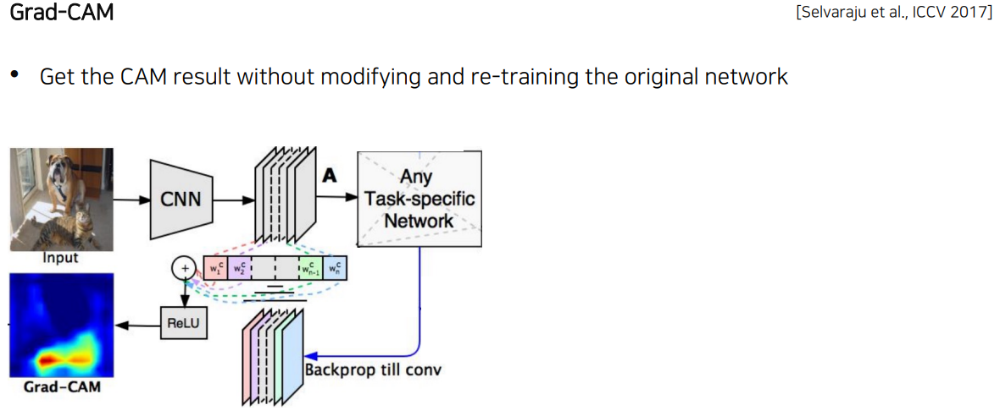
- CAM을 일반화 한 방법